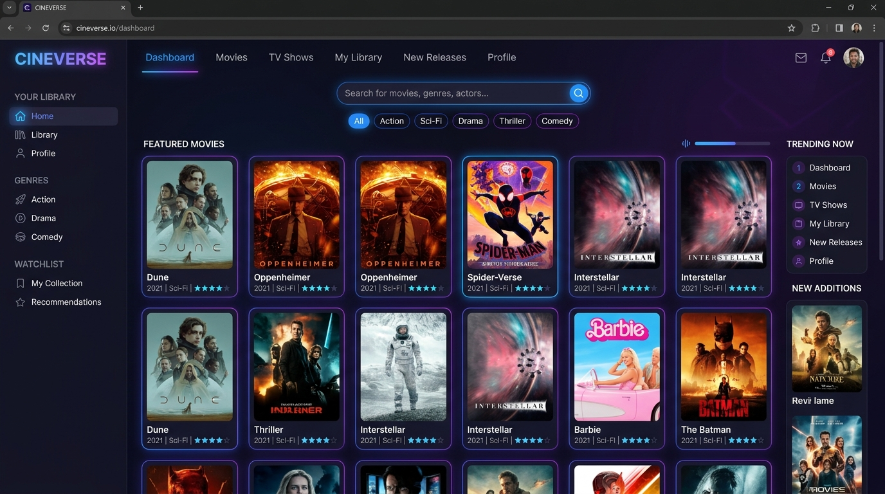

Bonjour, je suis
Nohlan Menicucci
Passionné par l'administration des systèmes et réseaux ainsi que le développement web. Rigoureux, méthodique et investi, je mets mes compétences techniques au service de solutions concrètes et performantes.
en entreprise
Mon Parcours & Le BTS SIO
Comprendre mon évolution académique, mes objectifs professionnels et le référentiel de formation.
Un profil technique pragmatique et tourné vers l'avenir
Âgé de 18 ans, j'ai débuté mon parcours avec un Baccalauréat Professionnel Systèmes Numériques au Lycée Jules Haag (Besançon), où j'ai acquis des bases solides en électronique, assemblage, câblage, et maintenance de premier niveau.
Désireux d'approfondir mes compétences techniques et conceptuelles, j'ai naturellement intégré le BTS SIO (Services Informatiques aux Organisations). Cette formation me permet d'aborder avec rigueur la gestion de parcs, l'infrastructure réseau, la cybersécurité et le génie logiciel.
Mes diverses expériences professionnelles (notamment chez ISYOS, Saint-Vit Informatique et METALIS) m'ont conféré une grande autonomie sur le terrain, une réelle capacité d'écoute et une solide méthodologie de diagnostic.
BTS SIO (Services Informatiques aux Organisations)
Lycée Jules Haag — Besançon (Formation théorique et pratique approfondie)
Baccalauréat Professionnel Systèmes Numériques
Lycée Jules Haag — Besançon (Maintenance, réseaux et électronique)
Certification PIX & Sécurité
Maîtrise des compétences numériques essentielles, ASSR 1 & 2
Systèmes et Réseaux
Administration des équipements d'interconnexion (switchs, routeurs), gestion des serveurs d'infrastructure (Windows Server, Linux), mise en place de la sécurité réseau et assistance aux utilisateurs.
Solutions Logicielles
Conception et développement d'applications logicielles et web, modélisation relationnelle de bases de données (SQL), intégration d'interfaces ergonomiques et maintenance applicative.
💡 Mon positionnement
Une polyvalence appréciée entre la maîtrise du matériel / support de proximité et la conception de solutions numériques modernes et sécurisées.
Compétences Informatiques
Un socle de compétences équilibré, structuré selon les exigences du référentiel BTS SIO et validé en conditions réelles.
Diagnostic méthodique des pannes matérielles et logicielles, remplacement de composants, installation et paramétrage d'OS, support aux utilisateurs.
Configuration de services de base, adressage IPv4, gestion des protocoles d'infrastructure, brassage de baies et administration à distance.
Intégration d'interfaces web réactives et sémantiques, écriture de scripts dynamiques côté client et requêtage relationnel de bases de données.
Respect des procédures de maintenance, sensibilisation aux règles d'hygiène informatique (ANSSI), traçabilité des interventions et rédaction technique.
Projets & Situations Professionnelles
Projets techniques développés dans le cadre de ma formation BTS SIO et de mes ateliers pratiques.

Gestionnaire de Films
Application web interactive permettant l'administration et le suivi d'une bibliothèque cinématographique avec validation dynamique des données saisies.
Atelier Infrastructure Réseau
Déploiement et sécurisation d'une maquette réseau d'entreprise virtualisée : adressage IPv4, serveurs DHCP/DNS et accès distant sécurisé.
Portfolio Professionnel BTS
Conception d'un site web complet valorisant mon identité numérique, mes compétences certifiées et mes travaux d'épreuve pour l'examen de BTS.
Expériences en Entreprise
Des périodes de stage significatives ayant permis d'appliquer mes acquis et de développer ma posture professionnelle.
Société de services informatiques spécialisée dans la maintenance, l'infogérance et l'assistance technique auprès d'entreprises et de particuliers.
- Configuration, mise à niveau et maintenance préventive de postes de travail.
- Diagnostic méthodique de pannes matérielles et réinstallation de systèmes d'exploitation.
- Assistance utilisateur de niveau 1 & 2 et résolution de problématiques d'interconnexion réseau.
Atelier de proximité spécialisé dans la réparation matérielle, le reconditionnement de matériel et le conseil informatique aux usagers.
- Démontage minutieux de PC portables et tours, test et récupération de composants viables.
- Installation propre de distributions Linux et d'environnements Windows avec pilotes adaptés.
- Conseil auprès des utilisateurs sur l'entretien régulier de leur matériel et la sauvegarde de leurs données.
Groupe industriel de référence dans la découpe et l'emboutissage de composants de précision pour l'automobile et l'industrie.
- Remise en service et contrôle de fiabilité d'un onduleur électrique industriel.
- Opérations de câblage d'armoires électriques et réparations par soudure de précision.
- Respect scrupuleux des normes de sécurité en usine (EPI, procédures de consignation).
Veille Technologique
Démarche active de suivi des innovations, vulnérabilités et évolutions techniques du secteur informatique.
L'Intelligence Artificielle au service de la Cybersécurité
Dans le cadre de ma veille pour le BTS SIO, j'analyse comment l'IA générative et l'apprentissage automatique (Machine Learning) transforment la détection proactive des incidents de sécurité face à l'automatisation croissante des cyberattaques.
Enjeux clés surveillés :
- Détection comportementale : identification d'anomalies de trafic en temps réel sur les flux réseau (analyse SIEM / SOC).
- Automatisation de la réponse (SOAR) : isolation immédiate des hôtes compromis sans intervention humaine préalable.
- Architectures Zero Trust : validation continue du principe "ne jamais faire confiance, toujours vérifier".
Ce qui me motive
Des activités extra-professionnelles qui renforcent ma rigueur, ma persévérance et ma curiosité.
Calisthénie & Discipline
Pratique exigeante au poids de corps développant la concentration, l'endurance mentale, la rigueur et le sens du dépassement continu.
VTT & Sport d'équipe
Sorties régulières en extérieur et pratique du football forgeant la cohésion d'équipe, l'esprit d'entraide et une excellente gestion du stress.
Hardware & Montage PC
Passion pour l'architecture des composants (CPU, GPU, refroidissement), le diagnostic précis et l'optimisation des performances systèmes.
Contact & Disponibilité
Vous avez une opportunité de stage, d'alternance ou une question sur mon profil ? Écrivez-moi !
Téléphone
07 67 40 00 24Localisation
Besançon / Saint-Vit, Franche-Comté (25)
Curriculum Vitae
Téléchargez mon CV complet au format PDF pour une vue détaillée de mon cursus.
Télécharger mon CV (PDF)